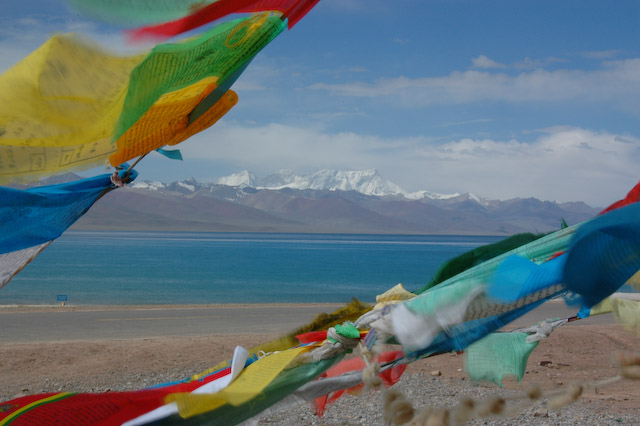
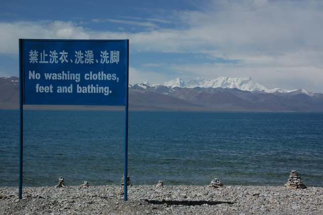
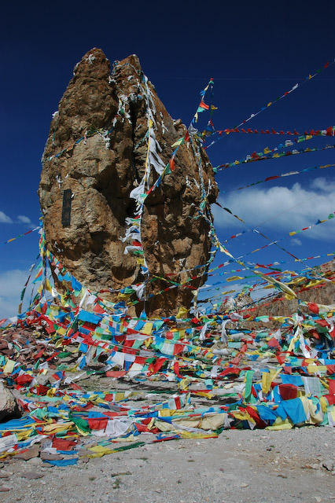
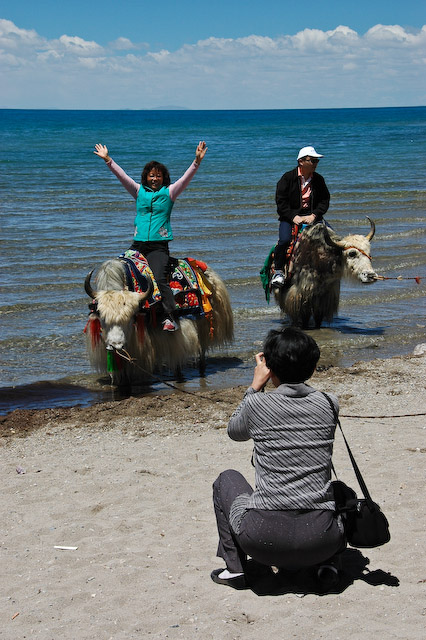
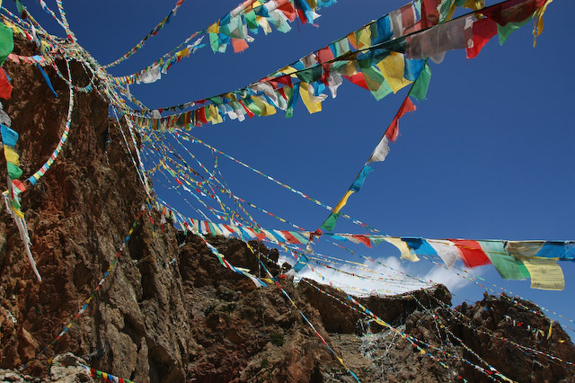
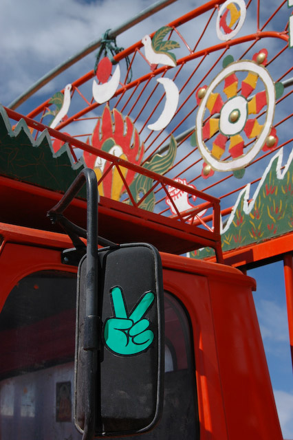

Nach einer kurzen Fahrt und einem weiteren Pass, der uns schon einen Vorgeschmack aus der Ferne lieferte, haben wir den 4700m hoch gelegenen Namtso-See erreicht. Der See ist über 70km lang und sieht aus wie ein Gebirgsmeer. Dazu passt auch der Umstand, dass es sich um einen Salzsee handelt.
Der See gehört zu den drei (sehr) heiligen Seen Tibets. Daher wird der See auch nicht von Schiffen befahren oder gar zum Füßewaschen benutzt. Wir sind eine Weile das Ufer entlang gefahren, bis wir an einen Hügel kamen, der steil aus der flachen Ebene aufragte. Natürlich gibt es dort ein kleines Kloster, ein paar Stupas und jede Menge Gebetsfahnen.
Wir sind ein Stückchen das Ufer entlang spaziert, haben den über 7000m hohen Berg mit dem unaussprechlichen Namen auf der gegenüberliegenden Seite bewundert und etwas in der Höhensonne gebraten.
Auf dem Rückweg war das idyllische Ufer allerdings von einer großen Menschenmenge in Beschlag genommen. Beim Näherkommen konnten wir erkennen, dass Menschen auf Yaks einige Schritte ins Wasser ritten, um direkt wieder umzukehren. Als wir uns das Spektakel von Nahem angesehen haben, befanden wir uns in einer Unmenge chinesischer Touristen, die sich gegenseitig in den albernsten Posen fotografierten. Neben dem mutigen Ritt auf dem Yak waren Tai-Chi ähnliche Bewegungen sehr beliebt.   
Der Weg nach Lhasa hat uns eine weitere interessante Lektionen über das tibetische Verkehrssystem gelehrt. Um beispielsweise die Geschwindigkeit in den Bergen zu regulieren, bleibt es nicht einfach beim Aufstellen von Tempo 30 Schildern. Sie haben eine kleine Hütte aufgestellt, in der man einen Zettel mit der aktuellen Uhrzeit bekommt. Bei der nächsten Hütte darf man dann erst nach einer bestimmten Zeit ankommen, die in etwa Tempo 30 entspricht. Dieser schlaue Kniff führt dazu, dass zwischen den Hütten mehrere wilde Picknick-Stellen entstanden sind. Da unser Fahrer eher zur progessiven Sorte gehört, mussten wir auch eine Weile lang picknicken.
Das hätten wir uns letztendlich aber auch sparen können. Unser Fahrer hatte sich nämlich dazu entschlossen, einfach nicht mehr bei den Checkpoints anzuhalten. Er ist bei jedem Checkpoint auf dem Weg nach Lhasa einfach auf der Gegenspur daran vorbei gefahren und anschließend lauthals gelacht. So geht es also auch.
In Lhasa haben wir ein fantastisches Hotel mitten in der Altstadt. Das große Haus ist in tibetischem Stil eingerichtet und verziert. Es hat Unmengen kleine Fenster und eine Dachterasse, von der aus man einen direkten Blick auf den Potala-Palast hat. Zu guter Letzt sei noch erwähnt, dass das nepalesisch geführte Hotel ein indisches Buffet zum Abendessen anbietet, das jede bisherige Mahlzeit in den Schatten stellt.
Wir haben uns direkt in die Gassen der Altstadt gestürzt. Nur ein paar Meter entfernt liegt der "Barkhor": Ein Rundgang um den Jokhang-Tempel, der von unzähligen Pilgern im Uhrzeigersinn begangen wird. Er wird vollständig von kleinen Verkaufsständen gesäumt, die tibetischen Schnickschnack und auch Nützliches wie Ersatzschnüre für Gebetsketten anbieten.